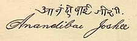

The first woman of Indian-origin to study and graduate with a degree in western
medicine in the United States
I regard irreligious people as pioneers. If there had been no priesthood the world would
have advanced ten thousand times better than it has now
Anandibai Gopalrao Joshi (31 March 1865 – 26 February 1887) was the first Indian female doctor of western medicine. She was the first woman from the erstwhile Bombay presidency of India to study and graduate with a two-year degree in western medicine in the United States. She was also referred to as Anandibai Joshi and Anandi Gopal Joshi
Fields: - Medicine
Born: - 1865 in Kalyan, Bombay Presidency (India)
Death: - 1887 in Pune, Bombay Presidency (India)
Alma mater: - Woman's Medical College of Pennsylvania
Main achievements: - First female of Indian origin to study and graduate with a degree in medicine in the United States.
Signature:

Anandibai Joshee (though her full name may be Anandi Gopal Joshee, she was mostly known as Anandibai Joshee or Anandi Gopal, and sometimes Joshi) was the first Indian woman to qualify as a medical doctor in western medicine. She was also the first Maharashtrian woman to pursue higher studies abroad. When she received the medical degree in March 1886 from the Women's Medical College of Pennsylvania, she was barely twenty-one. Upon her return to India, she passed away in Pune a year later, a month short of her twenty-second birthday.
Anandi Joshi was one of the first Indian female physicians. She was the first female of Indian origin to study and graduate with a degree in medicine in the United States. She is also believed to be the first woman to set foot on American soil from India.
Anandi Joshi was born as Yamuna, in Kalyan of the Thane district in present-day Maharashtra, to an orthodox Hindu family. Her family used to be landlords in Kalyan but lost their economic wealth. As was the practice at that time, Yamuna was married at the age of nine to Gopalrao, a widower almost twenty years her senior, due to pressure laid by her family. After marriage, her husband renamed her Anandi. Gopalrao worked as a postal clerk in Kalyan. Later, he was transferred to Alibag, and then, finally, to Calcutta (today, Kolkata). He was a progressive thinker, and supported education for women, which was not very prevalent at the time.
It was common for Brahmins in those times to be proficient in Sanskrit. However, influenced by Lokhitawadi's Shat Patre, Gopalrao regarded learning English as more pragmatic than learning Sanskrit. Noticing Anandi's interest, he helped her receive an education and learn English. At the age of fourteen, Anandi gave birth to a boy, but the child lived only for ten days because the medical care necessary for his survival was unavailable. This situation proved to be a turning point in Anandibai's life, and inspired her to become a physician.
Gopalrao encouraged Anandi to study medicine. In 1880, he sent a letter to Royal Wilder, a well-known American missionary, stating Anandibai's interest in studying medicine in the United States, and inquiring about a suitable post in the US for himself. Wilder offered to help if the couple would convert to Christianity. This proposition, however, was not acceptable to the Joshi couple. Wilder published the correspondence in his Princeton's Missionary Review. Theodicia Carpenter, a resident of Roselle, New Jersey, happened to read it while waiting to see her dentist. Anandi's desire to study medicine, and Gopalrao's support for his wife impressed her, and she wrote to them offering Anandibai accommodation in America. An exchange of many letters between Anandibai and Theodicia ensued in which they discussed, among other things, Hindu culture and religion.
Anandi Joshi began her medical education at age 19. In America, her declining health worsened because of the cold weather and unfamiliar diet. She contracted tuberculosis. Nevertheless, she graduated with an MD on 11 March 1886; the topic of her thesis was "Obstetrics among the Aryan Hindoos". On her graduation, Queen Victoria sent her a congratulatory message.
In late 1886, Anandi Joshi returned to India, receiving a hero's welcome. The princely state of Kolhapur appointed her as the physician-in-charge of the female ward of the local Albert Edward Hospital.
Anandi Joshi died early the next year on 26 February 1887 before turning 22. Her death was mourned throughout India. Her ashes were sent to Theodicia Carpenter, who placed them in her family cemetery in Poughkeepsie, New York.
Copyright @Mansi. Made with by Mansi Srivastava